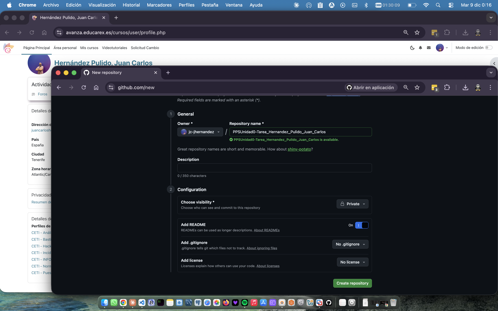
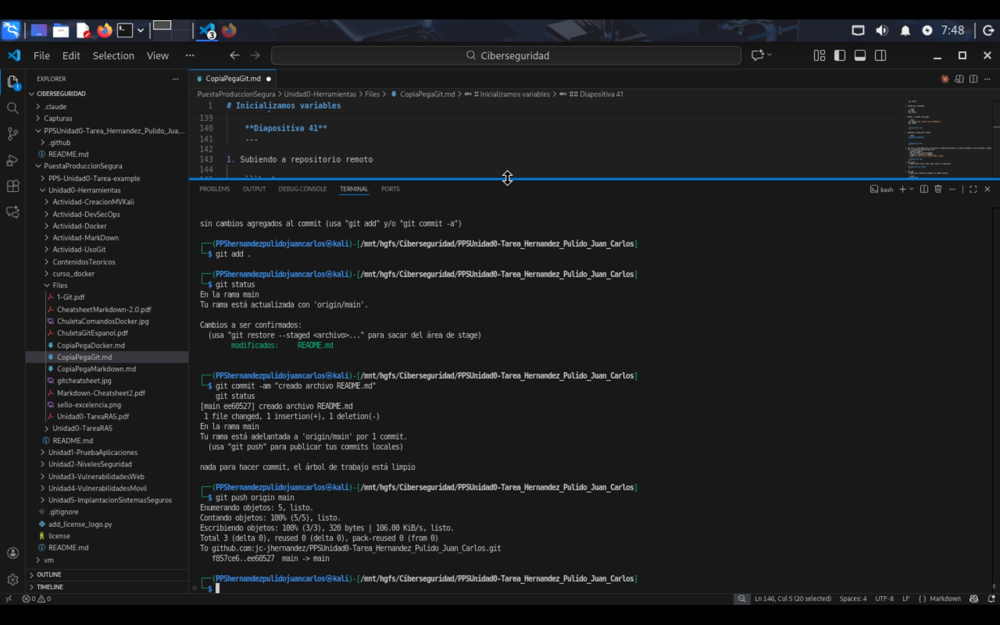
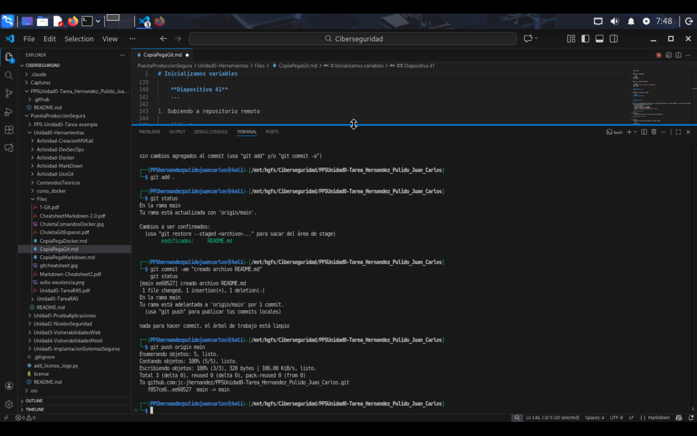
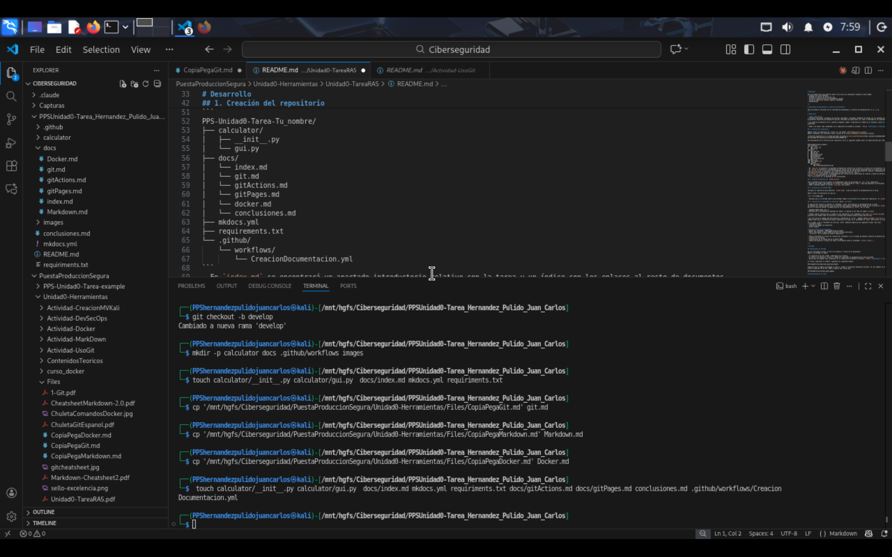
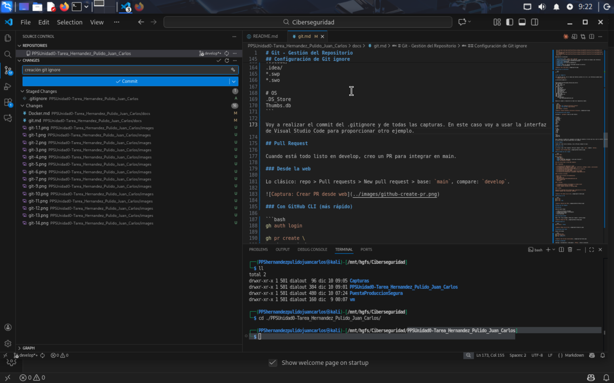
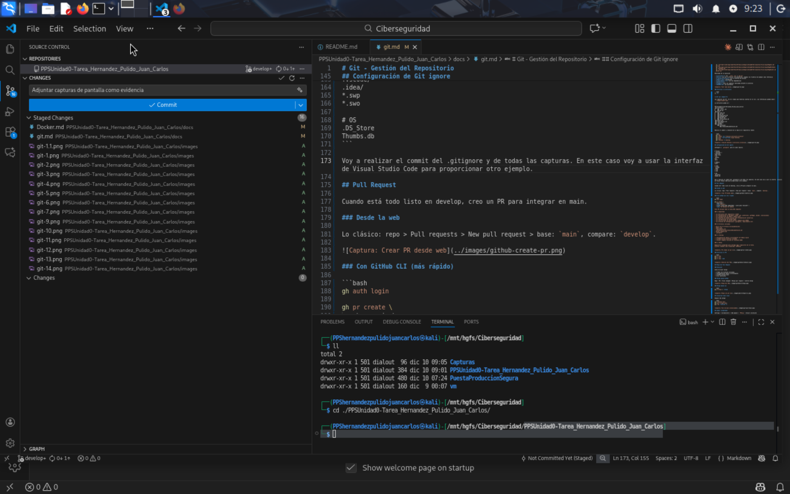
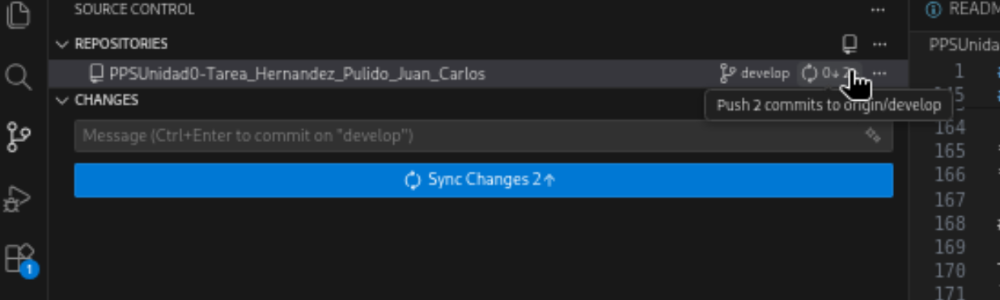
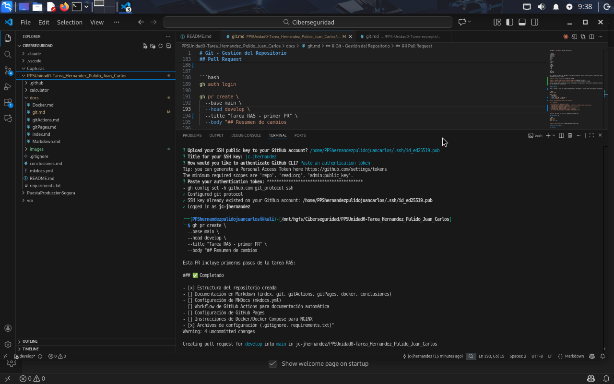
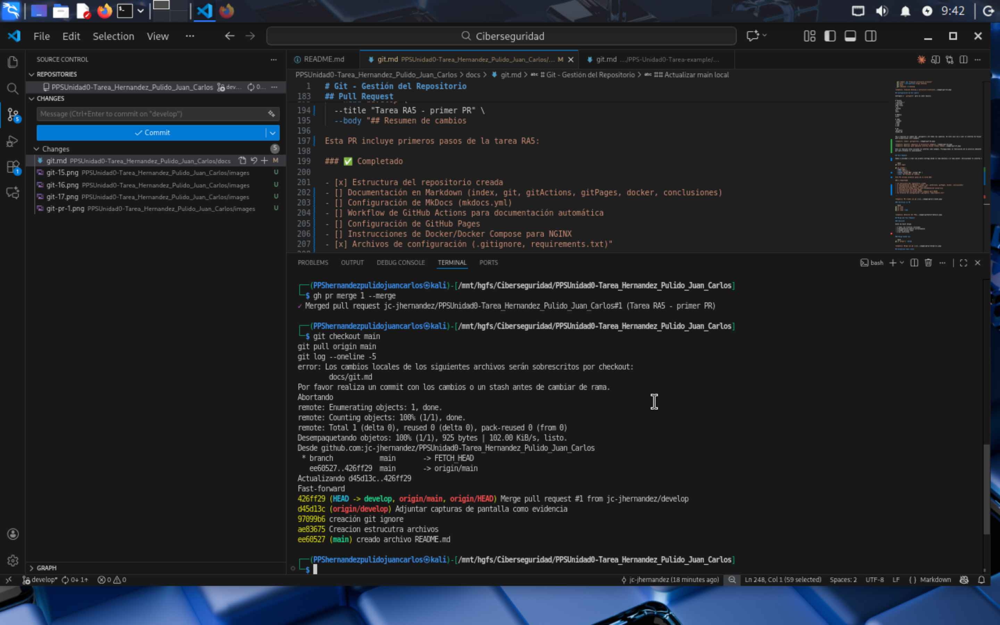

Git - Gestión del Repositorio¶
Índice¶
- Creación de clave ssh
- Creación del repositorio
- Invitar colaborador
- Clonar el repositorio
- Estructura del repositorio
- Crear rama develop
- Creación de estructura del repositorio
- Verificar la estructura
- Configuración de Git ignore
- Pull Request
- Verificar el PR
- Merge del Pull Request
- Revisión
- Merge desde CLI
- Actualizar main local
- Comandos Git utilizados
- Básicos
- Ramas
- Pull Requests (GitHub CLI)
- Trabajo con gh-pages
Creación de clave SSH¶
Configuro una nueva clave SSH en mi instancia Kali y mi cuenta GitHub
ssh-keygen -t ed25519 -C "juancarloshernandezpulido@gmail.com"
ssh-add .ssh/id_ed25519
cat .ssh/id_ed25519.pub
Creación del repositorio¶
Primero creo el repo en GitHub. Lo de siempre: login, "New repository", y relleno:
- Nombre:
PPS-Unidad0-Tarea-hernandez_pulido_juan_carlos - Privado


Nota: Durante la ejecución de la tarea descubrí un error al crear el repositorio privado. Procedo a modificarlo y hacerlo público

Invitar colaborador¶
Tal y como se indica en la tarea, invito al colaborador PPSvjp


Clonar el repositorio¶
Una vez creado, lo clono:
git clone git@github.com:jc-jhernandez/PPSUnidad0-Tarea_Hernandez_Pulido_Juan_Carlos.git
cd PPSUnidad0-Tarea_Hernandez_Pulido_Juan_Carlos

Estructura del repositorio¶
Voy a configurar el repositorio siguiendo los pasos indicados en la documentación. Realizaré el primer commit, y la generación del README.md en la rama main
git config --global user.name jc-jhernandez
git config --global user.mail juancarloshernandezpulido@gmail.com
git config --global init.defaultBranch main
git config --global core.editor nano
git config --global core.pager
tree -a .git
git commit -am "repositorio inicializado"
nano README.md
git status
git add .
git status
git commit -am "creado archivo README.md"
git push origin main


 

Crear rama develop¶
Por buenas prácticas, voy a trabajar por defecto en la rama develop. Una vez verificado y completadas las tareas, realizaré pull request a la rama principal main.
Creación de estructura del repositorio¶
mkdir -p calculator docs .github/workflows images
touch calculator/__init__.py calculator/gui.py docs/index.md mkdocs.yml requirements.txt
cp '/mnt/hgfs/Ciberseguridad/PuestaProduccionSegura/Unidad0-Herramientas/Files/CopiaPegaGit.md' git.md
cp '/mnt/hgfs/Ciberseguridad/PuestaProduccionSegura/Unidad0-Herramientas/Files/CopiaPegaMarkdown.md' Markdown.md
cp '/mnt/hgfs/Ciberseguridad/PuestaProduccionSegura/Unidad0-Herramientas/Files/CopiaPegaDocker.md' Docker.md
- calculator/ con
__init__.pyygui.py - docs/ con los 6 archivos .md necesarios, tomamos los ficheros de ejemplo como referencia
- .github/workflows/ con el workflow de Actions
- mkdocs.yml configurado
- requirements.txt con las dependencias
- Dockerfile
- images/ para las capturas realizadas durante la practica
- README.md (ya existente)

Verificar la estructura¶
¿Por qué images/?
Las capturas van ahí. Es más limpio que tenerlas sueltas en la raíz. Las referencias quedan mejor: images/nombre.png.
La estructura queda así:
PPS-Unidad0-Tarea-Hernandez_Pulido_Juan_Carlos/
├── calculator/
│ ├── __init__.py
│ └── gui.py
├── docs/
│ ├── index.md
│ ├── git.md
│ ├── gitActions.md
│ ├── gitPages.md
│ ├── docker.md
│ └── conclusiones.md
├── mkdocs.yml
├── requirements.txt
├── .gitignore
└── .github/
└── workflows/
└── CreacionDocumentacion.yml
Realizo el commit y creación de la rama en el repositorio remoto
git add .
git commit -am "Creación estructura archivos"
git push --set-upstream origin develop
git push
git checkout -b develop
Configuración de Git ignore¶
Configuro un .gitignore para no subir basura:
# Python
__pycache__/
*.py[cod]
*$py.class
*.so
.Python
env/
venv/
# MkDocs
site/
# IDEs
.vscode/
.idea/
*.swp
*.swo
# OS
.DS_Store
Thumbs.db
Voy a realizar el commit del .gitignore y de todas las capturas. En este caso voy a usar la interfaz de Visual Studio Code para proporcionar otro ejemplo.

 
Solo se realizan estas acciones en interfaz como ejemplo. Proseguiremos la realización de la practica mediante comandos git para afianzar el conocimiento.
Pull Request¶
Vamos a proceder a crear una primera entrega desde la rama develop a la rama master. Utilizaremos la interfaz cli gh
gh auth login
gh pr create \
--base main \
--head develop \
--title "Tarea RA5 - primer PR" \
--body "## Resumen de cambios
Esta PR incluye primeros pasos de la tarea RA5:
### ✅ Completado
- [x] Estructura del repositorio creada
- [ ] Documentación en Markdown (index, git, gitActions, gitPages, docker, conclusiones)
- [ ] Configuración de MkDocs (mkdocs.yml)
- [ ] Workflow de GitHub Actions para documentación automática
- [ ] Configuración de GitHub Pages
- [ ] Instrucciones de Docker/Docker Compose para NGINX
- [x] Archivos de configuración (.gitignore, requirements.txt)"

Verificar el PR¶

Merge del Pull Request¶
Revisión¶
Antes de hacer merge:
- ✅ Todos los archivos incluidos
- ✅ Documentación genera correctamente
- ✅ GitHub Actions pasa
- ✅ Sin conflictos
Nota: Los PR tienen como objetivo la revisión cruzada de código entre los miembros del equipo. Cuando se trabaja individualmente pierden parte de su utilidad. De cualquier forma nos facilitan el seguimiento de las tareas y cambios
Visualización en la web del PR

Merge desde CLI¶

Actualizar main local¶
Después del merge:

Comandos Git utilizados¶
Básicos¶
| Comando | Descripción |
|---|---|
git status |
Ver estado |
git add . |
Añadir cambios |
git commit -m "mensaje" |
Crear commit |
git push |
Subir cambios |
git pull |
Descargar cambios |
Ramas¶
| Comando | Descripción |
|---|---|
git branch |
Listar ramas |
git branch -a |
Todas las ramas |
git checkout -b nombre-rama |
Crear y cambiar rama |
git checkout nombre-rama |
Cambiar rama |
git merge nombre-rama |
Fusionar rama |
git branch -d nombre-rama |
Eliminar rama |
Pull Requests (GitHub CLI)¶
| Comando | Descripción |
|---|---|
gh auth login |
Autenticarse |
gh pr create |
Crear PR |
gh pr list |
Listar PRs |
gh pr view |
Ver detalles |
gh pr merge |
Fusionar PR |
gh pr view --web |
Abrir en navegador |
Trabajo con gh-pages¶
Esta rama contiene la documentación compilada por MkDocs.